1. Installing the CDPL Python Bindings
To be able to follow this tutorial the CDPL Python bindings have to be installed on your computer. The most straightforward way to accomplish this task is to install the latest official release deposited on PyPI using the pip command as follows:
pip install cdpkit
Other ways to install the Python bindings are described in section Installation.
2. CDPL Package Overview
The CDPL comprises several sub-packages each providing functionality related to a certain aspect of chem- and pharmacoinformatics. The following table lists all available sub-packages together with a brief description of the kind of functionality they provide:
Package |
Contents |
|---|---|
Core classes defining a software framework for functionality implemented in other CDPL packages |
|
Implementations of useful general purpose algorithms, containers, function objects and free functions |
|
Data structures, algorithms and functions related to mathematics |
|
Infrastructure for the representation, I/O and basic processing of molecular structures and reactions |
|
Functionality for the calculation/prediction of physicochemical and topological atom, bond and molecule properties |
|
Functionality for the I/O and processing of biological macromolecules |
|
Functionality for the generation and processing of pharmacophore and molecule descriptors |
|
Infrastructure for pharmacophore representation, I/O, perception, processing, alignment and screening |
|
Infrastructure for Gaussian volume-based molecular shape representation, processing, alignment and screening |
|
Implementation of MMFF94(s) for molecule conformer energy calculation and 3D structure optimization |
|
Functionality for molecule 3D structure and conformer ensemble generation |
|
Infrastructure for grid data storage, I/O and processing |
|
Functionality for the generation of GRAIL data sets [11] and GRADE descriptors [18] |
|
Functionality for molecule, reaction and 3D pharmacophore visualization |
3. Basic Concepts
3.1. Dynamic Properties
The CDPL stores properties associated with certain types of data like molecules, atoms, bonds, pharmacophores, etc. not as ordinary data members of the implementing classes but as key:value pairs in a dictionary (similar to the __dict__ attribute of Python objects). This design decision was made due to several advantages of this approach:
Flexibility and extensibility: new properties can be defined at runtime by user code
Class instance specific property values can be stored directly in the dictionary of the instance they are associated with, no external accompanying data structures are required for storing user-defined properties unknown to the CDPL
It can be easily determined whether the value of a particular property is available or not by checking if the dictionary contains a corresponding entry. C++ class data members (note that CDPL Python objects just wrap corresponding C++ class instances!) exist in memory after a class instance has been constructed and from that point on have a value. This is particularly problematic for properties that cannot be assigned a reasonable default value.
All CDPL classes supporting this kind of dynamic property storage are derived from class CDPL.Base.PropertyContainer which provides methods for property value lookup, storage, removal, iteration, existence testing and counting. Properties are identified by unique keys of type CDPL.Base.LookupKey that are created on-the-fly during the CDPL initialization phase. Keys of pre-defined CDPL properties are exported as static attributes of classes that follow the naming scheme CDPL.<PN>.<CN>Property. <PN> denotes the CDPL sub-package name (see table above) and <CN> is the name of a child class of CDPL.Base.PropertyContainer for which these properties have been defined (example: atom property keys accessible via class CDPL.Chem.AtomProperty). Property values virtually can be of any type and get stored in the dictionary as instances of the data wrapper class CDPL.Base.Any.
Since CDPL.Base.PropertyContainer methods acting upon a particular property always demand the key of the property as argument and setter/getter methods in addition require knowledge of the value type, corresponding code is not only tedious to write but also hard to read and error prone. Therefore, each CDPL sub-package that introduces properties also provides four free functions (at package level) per property that encapsulate the low-level CDPL.Base.PropertyContainer method calls. These functions internally not only specify the correct property key and value type but also constrain the type of the CDPL.Base.PropertyContainer subclass the property is associated with. CDPL.Chem.getOrder(), CDPL.Chem.setOrder(), CDPL.Chem.hasOrder() and CDPL.Chem.clearOrder() are an example of such four functions that are provided for the property CDPL.Chem.BondProperty.ORDER of CDPL.Chem.Bond instances with integer being the value type. Using property getter functions (like CDPL.Chem.getOrder()) has the additional benefit that they will, if one has been defined, automatically return a default value for unset properties. Defined property default values are exported and accessible as static attributes of classes that follow the naming scheme CDPL.<PN>.<CN>PropertyDefault (example: CDPL.Chem.BondPropertyDefault; for the meaning of <PN> and <CN> see text above).
3.2. Control-Parameters
Control-parameters are used for the runtime configuration of arbitrary functionality in a generic, flexible and functionality independent way (in the CDPL mainly used by the data I/O and visualization code). The implementation and usage of the control-parameter infrastructure largely parallels the one for dynamic properties:
Control-parameters are identified via unique instances of class CDPL.Base.LookupKey
Values can be of any type and are stored in a dictionary as CDPL.Base.Any objects
Keys of pre-defined control-parameters are exported as static attributes of classes that follow the naming scheme CDPL.<PN>.ControlParameter (<PN> = CDPL sub-package name, example: CDPL.Chem.ControlParameter)
Four convenience functions are provided for each control-parameter introduced by a package
CDPL classes employing the control-parameter infrastructure (directly or indirectly) are derived from class CDPL.Base.ControlParameterContainer. The class provides methods which are similar to those found in CDPL.Base.PropertyContainer but also offers methods (setParent() and getParent()) that allow to connect CDPL.Base.ControlParameterContainer instances in a parent-child manner. This way tree-like hierarchies of CDPL.Base.ControlParameterContainer instances for resolving parameter value requests can be built. If a requested parameter value is not stored in a given container then the request is automatically forwarded to the registered parent container which may again forward the request to its parent until a value is found or the root of the tree has been reached. Furthermore, methods are provided which allow the registration of user-defined functions or function objects that get called on events such as parameter value change (methods registerParameterChangedCallback() and unregisterParameterChangedCallback()), parameter value removal (methods registerParameterRemovedCallback() and unregisterParameterRemovedCallback()) and parent change (methods registerParentChangedCallback() and unregisterParentChangedCallback()).
A notable difference between dynamic properties and control-parameters is that the latter always possess a default value which gets returned by the associated getter function if a parameter value has not been explicitly set. Control-parameter default values are exported and accessible as static attributes of classes that follow the naming scheme CDPL.<PN>.ControlParameterDefault (<PN> = CDPL sub-package name; example: CDPL.Chem.ControlParameterDefault).
3.3. Data I/O Framework
Classes implementing the input/output of data of a certain type in a particular format (e.g. molecular structures in SD-file format) are derived from abstract base classes that follow the naming scheme CDPL.<PN>.<DT>ReaderBase and CDPL.<PN>.<DT>WriterBase, respectively. <PN> denotes the CDPL sub-package name and <DT> is the name of the data type to read or write (e.g. classes CDPL.Chem.MoleculeReaderBase and CDPL.Chem.MolecularGraphWriterBase). These base classes are all derived from the abstract class CDPL.Base.DataIOBase which itself is derived from CDPL.Base.ControlParameterContainer. Instances of concrete classes implementing the I/O of data in a particular format thus support the configuration of their runtime behavior by control-parameters (see CDPL.Chem.ControlParameter for examples). The names of the format-specific classes all follow the scheme CDPL.<PN>.<FID><DT>Reader and CDPL.<PN>.<FID><DT>Writer, respectively where <PN> denotes the CDPL sub-package name, <FID> is a format identifier (usually a characteristic file extension) and <DT> is the name of the data type to read or write (e.g. CDPL.Chem.SDFMoleculeReader and CDPL.Chem.SDFMolecularGraphWriter).
Data reader classes all expect an instance of class CDPL.Base.IStream and data writer classes an instance of CDPL.Base.OStream as argument to their constructor. These stream-based I/O classes represent abstract storage devices which allow the same code to handle I/O to files, in-memory strings, or custom adaptor devices that perform arbitrary operations (e.g. compression) on the fly. Concrete types of storage devices are implemented by dedicated subclasses of CDPL.Base.IStream and CDPL.Base.OStream such as class CDPL.Base.FileIOStream for file I/O and CDPL.Base.StringIOStream for in-memory string data I/O, respectively.
Since files represent the most common kind of data storage, file I/O-specific variants of reader/writer classes are provided that make reading/writing data from/to files more convenient. These classes follow the naming scheme CDPL.<PN>.File<FID><DT>Reader and CDPL.<PN>.File<FID><DT>Writer (for the meaning of <PN>, <FID> and <DT> see text above). Instead of an instance of CDPL.Base.IStream/CDPL.Base.OStream they accept the path to a file as constructor argument and thus circumvent the need to explicitly create and manage instances of class CDPL.Base.FileIOStream.
Each data format implemented in the CDPL is described by an instance of class CDPL.Base.DataFormat which stores and gives access to relevant format-specific information such as common file-extensions or mime-type. Pre-defined data format descriptors are exported as static attributes of classes following the naming scheme CDPL.<PN>.DataFormat where <PN> is the name of the CDPL sub-package implementing the format (e.g. CDPL.Chem.DataFormat).
The link between a CDPL.Base.DataFormat instance describing a particular data format and associated classes implementing the reading/writing of data in this format gets established by dedicated input- and output-handler classes. These classes provide factory methods to create a reader/writer class instance for a given file path or CDPL.Base.IStream/CDPL.Base.OStream instance and follow the naming scheme CDPL.<PN>.<FID><DT>InputHandler and CDPL.<PN>.<FID><DT>OutputHandler, respectively (for the meaning of <PN>, <FID> and <DT> see text above; examples: CDPL.Chem.SDFMoleculeInputHandler, CDPL.Chem.SMILESMolecularGraphOutputHandler). For each data format supported by the CDPL an input- and/or output-handler class instance is registered at a data type-specific singleton class named CDPL.<PN>.<DT>IOManager (for the meaning of <PN> and <DT> see text above; example: CDPL.Chem.MoleculeIOManager). Amongst others, the I/O manager classes provide methods to lookup a registered handler instance for a given file extension, mime-type or CDPL.Base.DataFormat object. This way it is possible to, e.g., write code that creates a reader class instance for the input of data from a file where the actual data format is determined lateron at runtime. In order to facilitate the writing of data format-independent code the CDPL provides special reader and writer classes that perform the runtime lookup of a suitable input/output handler and the reader/writer class instantiation automatically. The classes follow the naming scheme CDPL.<PN>.<DT>Reader and CDPL.<PN>.<DT>Writer, respectively (examples: CDPL.Chem.MoleculeReader and CDPL.Chem.MolecularGraphWriter). The constructors of the classes expect the data source/sink to be provided as a CDPL.Base.IStream/CDPL.Base.OStream instance or specified as path to a file. If a file path is specified it is attempted to deduce the data format from the file extension. Optionally, a characteristic file extension string or a CDPL.Base.DataFormat instance can be provided in case the file extension is missing or unknown to the CDPL. If the data source/sink is provided as a CDPL.Base.IStream/CDPL.Base.OStream instance then the explicit specification of the data format is mandatory.
4. Working with Molecules
4.1. In-memory Representation of Molecular Structures
The CDPL models molecular structures as undirected graphs where atoms represent the vertices of the graph and bonds the edges. Concrete data structures for the in-memory representation of atoms, bonds and molecular graphs implement a hierarchy of interfaces (abstract classes) that specify all necessary methods for common operations like atom/bond addition, removal, access, membership testing, counting, and so forth.
The following table provides an overview of the most relevant interfaces and data structures provided by the CDPL for molecular data representation and processing:
Class Name |
Class Type |
Parent Class(es) |
Description |
|---|---|---|---|
Interface |
Represents an arbitrary entity that can have a position in 3D space |
||
Interface |
- |
Represents a collection of CDPL.Chem.Entity3D instances and specifies methods for read-only instance access and querying their number |
|
Interface |
Represents a collection of CDPL.Chem.Atom instances and specifies methods for read-only instance access, querying their number, collection membership testing and ordering |
||
Interface |
- |
Represents a collection of CDPL.Chem.Bond instances and specifies methods for read-only instance access, querying their number, collection membership testing and ordering |
|
Interface |
CDPL.Chem.Entity3D, CDPL.Chem.AtomContainer, CDPL.Chem.BondContainer |
Represents an atom in molecular structures/graphs and provides additional connectivity and ownership related methods |
|
Implementation |
Default implementation of the CDPL.Chem.Atom interface |
||
Interface |
Represents a bond connecting two atoms in molecular structures/graphs, specifies additional connectivity and ownership related methods |
||
Implementation |
Default implementation of the CDPL.Chem.Bond interface |
||
Interface |
CDPL.Chem.AtomContainer, CDPL.Chem.BondContainer, CDPL.Base.PropertyContainer |
Represents an arbitrary molecular graph described by lists of CDPL.Chem.Atom and CDPL.Chem.Bond instances |
|
Interface |
Extends the CDPL.Chem.MolecularGraph interface by methods for atom and bond creation as well as methods for assignment of and merging with other molecular graphs |
||
Implementation |
Default implementation of the CDPL.Chem.Molecule interface |
||
Implementation |
Stores references (not copies!) to CDPL.Chem.Atom and CDPL.Chem.Bond objects owned/managed by one or more CDPL.Chem.Molecule instances |
4.2. Representation of Molecule Substructures
From scratch, a molecular graph can only be constructed via an instance of class CDPL.Chem.Molecule. Adding atoms and bonds by calling dedicated methods (see next section) will create new CDPL.Chem.Atom and CDPL.Chem.Bond objects which from that point on are owned and managed by the creating CDPL.Chem.Molecule instance. For the specification of arbitrary sets of CDPL.Chem.Atom and CDPL.Chem.Bond objects that belong to one or more CDPL.Chem.Molecule instance(s) the CDPL.Chem package provides the class CDPL.Chem.Fragment. As CDPL.Chem.Molecule this class also offers methods for adding atoms and bonds with the exception that the methods of CDPL.Chem.Fragment expect existing CDPL.Chem.Atom or CDPL.Chem.Bond instances as argument. These do not get stored as copies but as light-weight references to the original instances which can be retrieved lateron by methods for atom/bond access. CDPL.Chem.Molecule as well as CDPL.Chem.Fragment are subclasses of CDPL.Chem.MolecularGraph and their instances thus can be processed in the same way by any code that operates on CDPL.Chem.MolecularGraph objects.
4.3. Basic Operations on Molecule Objects
Most of the classes for molecular structure representation, molecular data I/O and functions for basic processing reside in package CDPL.Chem.
import CDPL.Chem as Chem
By the import line above the code in the remainder of this tutorial can conveniently access all CDPL.Chem package contents via the prefix Chem.*.
Furthermore, the CDPL Python bindings implement the Rich Output of Chem.MolecularGraph and Chem.FragmentList instances in Jupyter notebooks. Rich output is activated by importing the CDPL.Vis package and will be used in the following sections to display the skeletal formula of molecular graphs simply by typing the variable name at the end of a code cell.
import CDPL.Vis
4.3.1. Creation
A Chem.Molecule object not yet having any atoms and bonds can be created by instantiating the class Chem.BasicMolecule (the provided default implementation of the Chem.Molecule interface):
mol = Chem.BasicMolecule()
4.3.2. Querying Atom and Bond Counts
The number of (explicit) atoms can be queried either by acessing the property numAtoms or by calling the method getNumAtoms() which are both provided by the Chem.AtomContainer interface:
mol.numAtoms
# or
#mol.getNumAtoms()
0
In the same manner, the number of explicit bonds can be retrieved by the property numBonds or by calling the method getNumBonds() of the Chem.BondContainer interface:
mol.numBonds
# or
#mol.getNumBonds()
0
4.3.3. Creating Atoms and Bonds
Atoms are created by calling the method addAtom() of the Chem.Molecule interface:
a = mol.addAtom()
The method returns a Chem.Atom object which is owned by the creating Chem.Molecule instance mol. The created atom does not yet possess any chemical properties like element, formal charge, and so on (see section Essential Properties). The value of these properties needs to be set explicitly by invoking dedicated property functions which take the atom and desired value of the property as arguments.
Example:
Chem.setType(a, Chem.AtomType.C)
The Chem.setType() function will set the type property of the atom to the atomic number of carbon (note: predefined atomic numbers and other types are exported as static attributes of class Chem.AtomType). The value of the type property can be retrieved by the associated function Chem.getType():
Chem.getType(a)
6
In a similar fashion, bonds are created by calling the method addBond() which expects the indices (zero-based) of the two atoms to connect as arguments:
# add second carbon atom
Chem.setType(mol.addAtom(), Chem.AtomType.C)
b = mol.addBond(0, 1)
The method returns a Chem.Bond object which is also owned and managed by the creating Chem.Molecule
instance mol. As with atoms, the created bond does not yet have any properties. To set the bond order
to a value of 2 (= double bond) the property function Chem.setOrder() needs to be called:
Chem.setOrder(b, 2)
A previously set bond order property value can be retrieved by the accompanying getter function Chem.getOrder():
Chem.getOrder(b)
2
mol
To create a more complex molecule, e.g. Pyridine, from the Ethene fragment that is currently described by mol the following lines will do the trick:
# create missing atoms and set atom types
Chem.setType(mol.addAtom(), Chem.AtomType.C)
Chem.setType(mol.addAtom(), Chem.AtomType.C)
Chem.setType(mol.addAtom(), Chem.AtomType.C)
Chem.setType(mol.addAtom(), Chem.AtomType.N)
# create missing bonds and set orders
Chem.setOrder(mol.addBond(1, 2), 1)
Chem.setOrder(mol.addBond(2, 3), 2)
Chem.setOrder(mol.addBond(3, 4), 1)
Chem.setOrder(mol.addBond(4, 5), 2)
Chem.setOrder(mol.addBond(5, 0), 1)
mol.numBonds
6
mol.numAtoms
6
mol
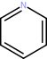
4.3.4. Copying Atoms and Bonds
A deep copy of a chemical structure described by a Chem.MolecularGraph instance can be created in several ways. The first option is to pass the Chem.MolecularGraph instance as argument to the constructur of class Chem.BasicMolecule:
mol_copy = Chem.BasicMolecule(mol)
mol_copy
The second possibility is to replace the current atoms and bonds of an existing Chem.Molecule instance by calling the method assign() or copy():
mol_copy = Chem.BasicMolecule()
Chem.setType(mol_copy.addAtom(), Chem.AtomType.C)
print(f'Num. atoms before assign(): {mol_copy.numAtoms}')
mol_copy.assign(mol)
# or
# mol_copy.copy(mol)
mol_copy
Num. atoms before assign(): 1
A third option is to call the method clone() of the Chem.MolecularGraph interface on the Chem.Molecule instance to copy:
mol_copy = mol.clone()
assert mol_copy.objectID != mol.objectID # check if a new Chem.Molecule instance was created
mol_copy
It is also possible to concatenate molecular structures either by calling the method append() or by using
the inplace addition operator +=:
mol_copy.append(mol)
mol_copy
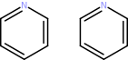
mol_copy += mol_copy
mol_copy
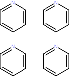
4.3.5. Accessing Atoms and Bonds
Atom and bonds of a molecular structure represented by a Chem.MolecularGraph instance can be accessed by calling the methods getAtom() (Chem.AtomContainer interface) and getBond() (Chem.BondContainer interface), respectively. These methods expect the zero-based index of the atom/bond in the parent molecular graphs’s atom/bond list as argument. Valid atom/bond indices are in the range [0, getNumAtoms())/[0, getNumBonds()).
Warning
Specifying an index outside the allowed range will trigger an exception!
Example: Counting atom types and bond orders
type_counts = {}
order_counts = {}
for i in range(0, mol.numAtoms):
atom = mol.getAtom(i)
atom_type = Chem.getType(atom)
if atom_type in type_counts:
type_counts[atom_type] += 1
else:
type_counts[atom_type] = 1
for i in range(0, mol.numBonds):
bond = mol.getBond(i)
bond_order = Chem.getOrder(bond)
if bond_order in order_counts:
order_counts[bond_order] += 1
else:
order_counts[bond_order] = 1
print(f'Atom types: {type_counts}')
print(f'Bond orders: {order_counts}')
Atom types: {6: 5, 7: 1}
Bond orders: {2: 3, 1: 3}
Atoms and bonds can also be accessed in a sequential manner by iterating over the corresponding atom and bond lists. The atom sequence can be retrieved via the Chem.MolecularGraph interface by calling the method getAtoms() or accessing the property atoms. The bond sequence by method getBonds() or property bonds. The following code is an alternative version of the one above that employs sequential atom/bond access:
type_counts = {}
order_counts = {}
for atom in mol.atoms:
atom_type = Chem.getType(atom)
if atom_type in type_counts:
type_counts[atom_type] += 1
else:
type_counts[atom_type] = 1
for bond in mol.bonds:
bond_order = Chem.getOrder(bond)
if bond_order in order_counts:
order_counts[bond_order] += 1
else:
order_counts[bond_order] = 1
print(f'Atom types: {type_counts}')
print(f'Bond orders: {order_counts}')
Atom types: {6: 5, 7: 1}
Bond orders: {2: 3, 1: 3}
4.3.6. Removing all Atoms and Bonds
Atoms, bonds and properties can be removed completely by calling the method clear():
print(f'Num. atoms before clear(): {mol_copy.numAtoms}')
print(f'Num. bonds before clear(): {mol_copy.numBonds}')
mol_copy.clear()
print(f'Num. atoms after clear(): {mol_copy.numAtoms}')
print(f'Num. bonds after clear(): {mol_copy.numBonds}')
Num. atoms before clear(): 24
Num. bonds before clear(): 24
Num. atoms after clear(): 0
Num. bonds after clear(): 0
4.3.7. Removing single Atoms and Bonds
Single atoms and bonds can be removed by calling the methods removeAtom() and removeBond(), respectively. The methods expect the zero-based index of the atom/bond in the molecule’s atom/bond list as argument. Valid atom/bond indices are in the range [0, getNumAtoms())/[0, getNumBonds()).
Warning
Specifying an index outside the allowed range will trigger an exception!
mol_copy.assign(mol)
print(f'Num. atoms before removeAtom(1): {mol_copy.numAtoms}')
print(f'Num. bonds before removeAtom(1): {mol_copy.numBonds}')
# remove 2nd atom
mol_copy.removeAtom(1)
print(f'Num. atoms after removeAtom(1): {mol_copy.numAtoms}')
print(f'Num. bonds after removeAtom(1): {mol_copy.numBonds}')
mol_copy
Num. atoms before removeAtom(1): 6
Num. bonds before removeAtom(1): 6
Num. atoms after removeAtom(1): 5
Num. bonds after removeAtom(1): 4
As can be seen, the removal of an atom automatically triggers the removal of all incident bonds. This is necesessary to maintain molecular graph integrity. Removal of a bond, on the other hand, will only affect the bond count:
mol_copy.assign(mol)
print(f'Num. atoms before removeBond(2): {mol_copy.numAtoms}')
print(f'Num. bonds before removeBond(2): {mol_copy.numBonds}')
# remove 3rd bond
mol_copy.removeBond(2)
print(f'Num. atoms after removeBond(2): {mol_copy.numAtoms}')
print(f'Num. bonds after removeBond(2): {mol_copy.numBonds}')
mol_copy
Num. atoms before removeBond(2): 6
Num. bonds before removeBond(2): 6
Num. atoms after removeBond(2): 6
Num. bonds after removeBond(2): 5
Warning
Chem.Atom or Chem.Bond instances that are removed from their parent Chem.Molecule instance become invalid and performing any operations on such instances (e.g. method calls via variables still referencing them) results in undefined behavior!
4.3.8. Removing multiple Atoms and Bonds
Multiple atoms and bonds can be removed at once via the help of a Chem.Fragment instance that specifies the
atoms and bonds to remove. After adding atoms and bonds to the Chem.Fragment`_ instance their removal is initiated
either by calling the method remove() with the fragment object as argument or by
inplace subtraction
(-=) of the fragment object:
mol_copy = mol.clone()
frag = Chem.Fragment()
frag.addAtom(mol_copy.getAtom(0))
frag.addBond(mol_copy.getBond(1)) # this will also add the bonded atoms!
print(f'Num. fragment atoms: {frag.numAtoms}')
print(f'Num. fragment bonds: {frag.numBonds}')
print(f'Num. atoms before remove(frag): {mol_copy.numAtoms}')
print(f'Num. bonds before remove(frag): {mol_copy.numBonds}')
mol_copy.remove(frag)
# or
#mol_copy -= frag
print(f'Num. atoms after remove(frag): {mol_copy.numAtoms}')
print(f'Num. bonds after remove(frag): {mol_copy.numBonds}')
mol_copy
Num. fragment atoms: 3
Num. fragment bonds: 1
Num. atoms before remove(frag): 6
Num. bonds before remove(frag): 6
Num. atoms after remove(frag): 3
Num. bonds after remove(frag): 2
4.3.9. Testing Atom and Bond Ownership
Whether a particular Chem.Atom instance belongs to a given Chem.Molecule instance can be checked either
by calling the method containsAtom() (Chem.AtomContainer interface) or by the
membership test operator ìn as follows:
mol_copy.assign(mol)
mol.containsAtom(mol.atoms[0])
True
mol.getAtom(0) in mol
True
mol.containsAtom(mol_copy.getAtom(0))
False
mol_copy.atoms[0] in mol
False
Similarly, a Chem.Bond instance membership test can be performed by calling the method containsBond()
(Chem.BondContainer interface) or by using the ìn operator:
mol.containsBond(mol.bonds[0])
True
mol.getBond(0) in mol
True
mol.containsBond(mol_copy.getBond(0))
False
mol_copy.bonds[0] in mol
False
4.3.10. Retrieving Atom and Bond Indices
The index of a Chem.Atom instance in the atom list of the parent Chem.Molecule instance can be retrieved by passing the atom as argument to the method getAtomIndex() (Chem.AtomContainer interface). In a similar manner, the index of a Chem.Bond instance can be determined by calling the method getBondIndex() (Chem.BondContainer interface):
mol.getAtomIndex(mol.getAtom(3))
3
mol.getBondIndex(mol.getBond(2))
2
Warning
The attempt to retrieve the Chem.Atom or Chem.Bond instance index on a Chem.Molecule instance that is not the parent will raise an exception!
Examples:
mol.getAtomIndex(mol_copy.atoms[0])
---------------------------------------------------------------------------
ItemNotFound Traceback (most recent call last)
Cell In[38], line 1
----> 1 mol.getAtomIndex(mol_copy.atoms[0])
ItemNotFound: BasicMolecule: argument atom not part of the molecule
mol.getBondIndex(mol_copy.bonds[1])
---------------------------------------------------------------------------
ItemNotFound Traceback (most recent call last)
Cell In[39], line 1
----> 1 mol.getBondIndex(mol_copy.bonds[1])
ItemNotFound: BasicMolecule: argument bond not part of the molecule
4.3.11. Processing Bonds
Chem.Bond is a subclass of Chem.AtomContainer and methods/properties of the latter thus can be used to access the two bonded Chem.Atom objects in the same way as it was done for the parent Chem.Molecule instance:
bond = mol.getBond(2)
bond.numAtoms
2
mol.getAtomIndex(bond.getAtom(0))
2
mol.getAtomIndex(bond.getAtom(1))
3
Like class Chem.MolecularGraph, Chem.Bond provides the property atoms and the method getAtoms() which both give access to the atom pair sequence:
mol.getAtomIndex(bond.atoms[0])
2
mol.getAtomIndex(bond.getAtoms()[1])
3
Additionally, the first atom (index=0) can be directly accessed by calling the method getBegin() or as value of the property begin:
mol.getAtomIndex(bond.getBegin())
2
mol.getAtomIndex(bond.begin)
2
The second atom (index=1) can be accessed as value of the property end or by calling the method getEnd():
mol.getAtomIndex(bond.getEnd())
3
mol.getAtomIndex(bond.end)
3
If one Chem.Atom instance is given then the other instance referenced by the Chem.Bond object can be retrieved by the calling the method getNeighbor():
mol.getAtomIndex(bond.getNeighbor(bond.atoms[0]))
3
Warning
Passing a Chem.Atom instance as argument that is not a member of the bond will trigger an exception!
bond.getNeighbor(mol.atoms[0])
---------------------------------------------------------------------------
ItemNotFound Traceback (most recent call last)
Cell In[50], line 1
----> 1 bond.getNeighbor(mol.atoms[0])
ItemNotFound: BasicBond: argument atom not a member
4.3.12. Processing Atom Connections
Chem.Atom sublasses both Chem.AtomContainer and Chem.BondContainer which together provide methods and properties that can be used to access incident bonds and connected atoms.
Example:
for atom in mol.atoms:
print(f'Atom index: {mol.getAtomIndex(atom)}')
print(f' Num. connected atoms: {atom.numAtoms}')
for i in range(atom.numAtoms):
con_atom = atom.getAtom(i)
con_bond = atom.getBond(i)
print(f' Connected atom index: {mol.getAtomIndex(con_atom)}')
print(f' Bond index: {mol.getBondIndex(con_bond)}')
Atom index: 0
Num. connected atoms: 2
Connected atom index: 1
Bond index: 0
Connected atom index: 5
Bond index: 5
Atom index: 1
Num. connected atoms: 2
Connected atom index: 0
Bond index: 0
Connected atom index: 2
Bond index: 1
Atom index: 2
Num. connected atoms: 2
Connected atom index: 1
Bond index: 1
Connected atom index: 3
Bond index: 2
Atom index: 3
Num. connected atoms: 2
Connected atom index: 2
Bond index: 2
Connected atom index: 4
Bond index: 3
Atom index: 4
Num. connected atoms: 2
Connected atom index: 3
Bond index: 3
Connected atom index: 5
Bond index: 4
Atom index: 5
Num. connected atoms: 2
Connected atom index: 4
Bond index: 4
Connected atom index: 0
Bond index: 5
Additionally, Chem.Atom provides the method getAtoms() and the property atoms for accessing the list of bonded Chem.Atom instances as well as the method getBonds() and the property bonds for corresponding Chem.Bond instance access.
The above code changed to use the mentioned properties:
for atom in mol.atoms:
print(f'Atom index: {mol.getAtomIndex(atom)}')
print(f' Num. connected atoms: {atom.numAtoms}')
for i in range(atom.numAtoms):
con_atom = atom.atoms[i]
con_bond = atom.bonds[i]
print(f' Connected atom index: {mol.getAtomIndex(con_atom)}')
print(f' Bond index: {mol.getBondIndex(con_bond)}')
Atom index: 0
Num. connected atoms: 2
Connected atom index: 1
Bond index: 0
Connected atom index: 5
Bond index: 5
Atom index: 1
Num. connected atoms: 2
Connected atom index: 0
Bond index: 0
Connected atom index: 2
Bond index: 1
Atom index: 2
Num. connected atoms: 2
Connected atom index: 1
Bond index: 1
Connected atom index: 3
Bond index: 2
Atom index: 3
Num. connected atoms: 2
Connected atom index: 2
Bond index: 2
Connected atom index: 4
Bond index: 3
Atom index: 4
Num. connected atoms: 2
Connected atom index: 3
Bond index: 3
Connected atom index: 5
Bond index: 4
Atom index: 5
Num. connected atoms: 2
Connected atom index: 4
Bond index: 4
Connected atom index: 0
Bond index: 5
The Chem.Bond instance that connects a pair of atoms can be queried using the Chem.Atom method getBondToAtom(). The method is called on one of the Chem.Atom instances and expects the bonded other Chem.Atom instance as argument:
mol.getBondIndex(mol.atoms[0].getBondToAtom(mol.atoms[5]))
5
Warning
If a Chem.Bond instance connecting the Chem.Atom instance pair does not exist then an exception will be raised!
mol.atoms[0].getBondToAtom(mol.atoms[2])
---------------------------------------------------------------------------
ItemNotFound Traceback (most recent call last)
Cell In[54], line 1
----> 1 mol.atoms[0].getBondToAtom(mol.atoms[2])
ItemNotFound: BasicAtom: argument atom is not a bonded neighbor
Alternatively, the method findBondToAtom() can be used. In contrast to getBondToAtom() the method returns
None if a connecting Chem.Bond instance does not exist:
print(mol.atoms[0].findBondToAtom(mol.atoms[2]))
None
4.4. Basic Operations on Fragment Objects
Chem.Fragment (see section Representation of Molecule Substructures) implements the Chem.MolecularGraph interface and thus provides the same methods and properties as class Chem.Molecule for accessing/processing the referenced Chem.Atom and Chem.Bond instances (see section Basic Operations on Molecule Objects). In the following subsections therefore only those methods of Chem.Fragment will be treated that are not present in class Chem.Molecule or for some other reasons deserve a more closer look.
4.4.1. Creation
An empty Chem.Fragment object not yet referencing any atoms and bonds can be created by:
frag = Chem.Fragment()
frag.numAtoms
0
Chem.Fragment also provides constructors that accept either a Chem.Fragment or a Chem.MolecularGraph instance as argument. These constructors create a Chem.Fragment object that will then reference the same Chem.Atom and Chem.Bond instances as the passed argument:
frag = Chem.Fragment(mol)
frag
As noted in section Representation of Molecule Substructures, Chem.Atom and Chem.Bond
instances added to a Chem.Fragment instance get stored as pointers (not as copies).
Membership tests for Chem.Atom and Chem.Bond instances retrieved from a Chem.Fragment will therefore
evaluate to True when carried out on the source Chem.MolecularGraph object:
atom = frag.getAtom(0)
frag.containsAtom(atom)
True
mol.containsAtom(atom)
True
bond = frag.getBond(0)
frag.containsBond(bond)
True
mol.containsBond(bond)
True
4.4.2. Adding single Atoms and Bonds
For adding individual Chem.Atom and Chem.Bond instances class Chem.Fragment provides the methods
addAtom() and
addBond(),
respectively.
For molecular graph consistency reasons, adding a Chem.Bond instance also adds the two
Chem.Atom instances referenced by the bond (if not added already). Furthermore, pointers to Chem.Atom and
Chem.Bond instances get stored only once. In case a given Chem.Atom or Chem.Bond instance has already
been added the methods will do nothing and just return False.
Examples:
# atom already present -> False
frag.addAtom(mol.atoms[0])
False
# bond already present -> False
frag.addBond(mol.bonds[0])
False
frag = Chem.Fragment()
print(f'Num. atoms before addBond(): {frag.numAtoms}')
frag.addBond(mol_copy.bonds[0])
print(f'Num. atoms after addBond(): {frag.numAtoms}')
print(f'Num. bonds after addBond(): {frag.numBonds}')
frag
Num. atoms before addBond(): 0
Num. atoms after addBond(): 2
Num. bonds after addBond(): 1
4.4.3. Adding multiple Atoms and Bonds
The current lists of Chem.Atom and Chem.Bond instances can be replaced by the method assign() which accepts either a Chem.Fragment or a Chem.MolecularGraph instance as argument:
frag.assign(mol)
frag
The current lists of Chem.Atom and Chem.Bond instances can be extended by using the
inplace addition operator
+= with a Chem.MolecularGraph instance specifying the atoms and bond to add:
frag += mol_copy
frag
Note that only Chem.Atom and Chem.Bond instance will be added that are not yet part of the Chem.Fragment instance:
# fragment remains unaltered
frag += mol_copy
frag
4.4.4. Exchanging Atom and Bond Lists
The current lists of Chem.Atom and Chem.Bond instances of two Chem.Fragment instances can be mutually exchanged by calling the method swap() on one of the instances providing the other instance as argument:
frag2 = Chem.Fragment(mol)
frag.swap(frag2)
frag
frag2
4.4.5. Removing single Atoms and Bonds
Single atoms and bonds can be removed by calling the methods removeAtom() and removeBond(), respectively. The methods expect the Chem.Atom/Chem.Bond instance to remove or the zero-based index as argument. Valid atom/bond indices are in the range [0, getNumAtoms())/[0, getNumBonds()).
Warning
Specifying an index outside the allowed range will trigger an exception!
Examples:
print(f'Num. atoms before removeAtom(1): {frag.numAtoms}')
print(f'Num. bonds before removeAtom(1): {frag.numBonds}')
# remove 2nd atom
frag.removeAtom(1)
print(f'Num. atoms after removeAtom(1): {frag.numAtoms}')
print(f'Num. bonds after removeAtom(1): {frag.numBonds}')
frag
Num. atoms before removeAtom(1): 6
Num. bonds before removeAtom(1): 6
Num. atoms after removeAtom(1): 5
Num. bonds after removeAtom(1): 4
In order to maintain molecular graph consistency, removing an atom automatically triggers the removal of all incident bonds. Removal of a bond will have no effect on the atom count:
print(f'Num. atoms before removeBond(2): {frag.numAtoms}')
print(f'Num. bonds before removeBond(2): {frag.numBonds}')
# remove 3rd bond
frag.removeBond(frag.bonds[2])
print(f'Num. atoms after removeBond(2): {frag.numAtoms}')
print(f'Num. bonds after removeBond(2): {frag.numBonds}')
frag
Num. atoms before removeBond(2): 5
Num. bonds before removeBond(2): 4
Num. atoms after removeBond(2): 5
Num. bonds after removeBond(2): 3
When the removal of a Chem.Atom or Chem.Bond instance is attempted that is not part of the
Chem.Fragment instance then the corresponding methods return False to indicate that the removal
operation failed:
frag.removeAtom(mol_copy.getAtom(0))
False
frag.removeBond(mol_copy.getBond(0))
False
frag
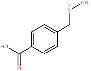
4.4.6. Removing multiple Atoms and Bonds
Multiple Chem.Atom and Chem.Bond instances can be removed at once via
inplace subtraction
(-=) of a Chem.MolecularGraph instance:
frag.assign(mol)
frag += mol_copy
frag
frag2.clear()
frag2.addBond(mol_copy.getBond(0))
frag2.addBond(mol_copy.getBond(1))
frag -= frag2
frag
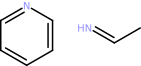
Attempting to remove Chem.Atom and Chem.Bond instances that are not part of the Chem.Fragment instance will have no effect:
frag -= frag2
frag
4.5. Input of Molecule Data
4.5.1. Parsing String Data
SMILES and SMARTS
For the parsing of SMILES strings the CDPL.Chem package provides the built-in utility function Chem.parseSMILES(). The function returns a Chem.BasicMolecule object representing the chemical structure encoded by the given SMILES string.
Example:
mol = Chem.parseSMILES('c1c(C(=O)O)ccc(CNN)c1')
mol
A similar function called Chem.parseSMARTS() can be used to parse and and prepare SMARTS patterns for substructure searching:
mol = Chem.parseSMARTS('c1:c:[n,o,s]:c:c:1-[C:2](-,=[*])-,=O')
mol
Other formats
The general procedure for the construction of molecules from string data in one of the supported formats (including SMILES and SMARTS) is as follows:
Create an instance of class Base.StringIOStream that wraps the string and serves as input data source for the next steps.
Create a suitable Chem.MoleculeReaderBase subclass instance that will perform the format-specific decoding of the molecule data in step 3.
Call the read() method of the created data reader providing an instance of class Chem.BasicMolecule for the storage of the read molecular structure as argument.
Molecule data readers for a specific format (step 2) can be created in two ways:
Via class Chem.MoleculeReader providing the Base.StringIOStream instance (Step 1) and a data format specifier (= file extension or one of the data format descriptors defined in class Chem.DataFormat) as constructor arguments.
Direct instantiation of a format-specific subclass of Chem.MoleculeReaderBase (e.g. Chem.MOL2MoleculeReader implementing the Sybyl MOL2 format input).
Example: Reading a molecule from a string storing data in MDL SDF format
import CDPL.Base as Base
sdf_data = """5950
12162506342D
13 12 0 1 0 0 0 0 0999 V2000
5.1350 -0.2500 0.0000 O 0 0 0 0 0 0 0 0 0 0 0 0
4.2690 1.2500 0.0000 O 0 0 0 0 0 0 0 0 0 0 0 0
2.5369 0.2500 0.0000 N 0 0 0 0 0 0 0 0 0 0 0 0
3.4030 -0.2500 0.0000 C 0 0 1 0 0 0 0 0 0 0 0 0
3.4030 -1.2500 0.0000 C 0 0 0 0 0 0 0 0 0 0 0 0
4.2690 0.2500 0.0000 C 0 0 0 0 0 0 0 0 0 0 0 0
3.4030 0.3700 0.0000 H 0 0 0 0 0 0 0 0 0 0 0 0
2.7830 -1.2500 0.0000 H 0 0 0 0 0 0 0 0 0 0 0 0
3.4030 -1.8700 0.0000 H 0 0 0 0 0 0 0 0 0 0 0 0
4.0230 -1.2500 0.0000 H 0 0 0 0 0 0 0 0 0 0 0 0
2.0000 -0.0600 0.0000 H 0 0 0 0 0 0 0 0 0 0 0 0
2.5369 0.8700 0.0000 H 0 0 0 0 0 0 0 0 0 0 0 0
5.6720 0.0600 0.0000 H 0 0 0 0 0 0 0 0 0 0 0 0
1 6 1 0 0 0 0
1 13 1 0 0 0 0
2 6 2 0 0 0 0
4 3 1 6 0 0 0
3 11 1 0 0 0 0
3 12 1 0 0 0 0
4 5 1 0 0 0 0
4 6 1 0 0 0 0
4 7 1 0 0 0 0
5 8 1 0 0 0 0
5 9 1 0 0 0 0
5 10 1 0 0 0 0
M END
> <PUBCHEM_COMPOUND_CID>
5950
$$$$
"""
ios = Base.StringIOStream(sdf_data)
reader = Chem.MoleculeReader(ios, 'sdf')
# or
#reader = Chem.MoleculeReader(ios, Chem.DataFormat.SDF)
# or
#reader = Chem.SDFMoleculeReader(ios)
reader.read(mol)
mol
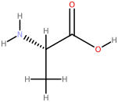
4.5.2. Reading Data Files
Reading molecules from files also requires the creation of a Chem.MoleculeReaderBase subclass instance that performs the actual format-specific data decoding work. As with string data, several options exist:
Instantiation of class Chem.MoleculeReader passing the path to the file as constructor argument. When just a path is provided as argument then the data format will be determined automatically from the file extension. To override this behavior, a second argument specifying the actual file extension string to use (e.g.
'sdf','smi','mol2', ..) or one one of the data format descriptors defined in class Chem.DataFormat has to be provided.Instantiation of class Chem.MoleculeReader passing an instance of class Base.FileIOStream that was created for the file as first and and a format specifier as second argument. The format specification can be a characteristic file extension or one of the data format descriptors defined in class Chem.DataFormat.
Direct instantiation of a format-specific subclass of Chem.MoleculeReaderBase (e.g. Chem.SDFMoleculeReader implementing reading MDL SD-file format data) that accepts an instance of class Base.FileIOStream as constructor argument.
Direct instantiation of a format-specific subclass of Chem.MoleculeReaderBase (e.g. Chem.FileSDFMoleculeReader) that accepts a file path as constructor argument.
# - Option 1 -
reader = Chem.MoleculeReader('/path/to/input/file.sdf')
# or
reader = Chem.MoleculeReader('/path/to/input/file', 'smi')
# or
reader = Chem.MoleculeReader('/path/to/input/file', Chem.DataFormat.SMILES)
# - Option 2 -
reader = Chem.MoleculeReader(Base.FileIOStream('/path/to/input/file'), 'sdf')
# or
reader = Chem.MoleculeReader(Base.FileIOStream('/path/to/input/file'), Chem.DataFormat.SDF)
# - Option 3 -
reader = Chem.MOL2MoleculeReader(Base.FileIOStream('/path/to/input/file'))
# - Option 4 -
reader = Chem.FileSDFMoleculeReader('/path/to/input/file')
4.5.3. Sequential Molecule Access
Given a properly initialized Chem.MoleculeReaderBase subclass instance, molecules can be read in
the order specified by the input data by repeatedly calling the read() method. If there are no more
molecules to read, the return value of the method will evaluate to False:
smi_data = """c1n(ccn1)c1ccc(cc1)c1ccc(n1c1c(cc(cc1)C(=O)N)C)CCC(=O)[O-] 022_3QJ5_A
CNC(=O)[C@H](C(C)(C)C)NC(=O)[C@@H]([C@H](C)N([O-])C=O)CCCc1ccccc1 023_2WO9_B
N1N(C(c2c(C=1Nc1cc([nH]n1)C)ccc(N1CC[NH+](CC1)C)c2)=O)C(C)C 027_3PIX_A
"""
ios = Base.StringIOStream(smi_data)
reader = Chem.MoleculeReader(ios, 'smi')
mol_count = 0
while reader.read(mol_copy):
mol_count += 1
print(f'Read {mol_count} molecules')
Read 3 molecules
4.5.4. Random Molecule Access
There is a special version of the read() method of class Chem.MoleculeReaderBase which expects the index (zero-based) of the molecule to read as its first argument. This way molecules can be read in any order, no matter what their position is in the input data. The number of available molecules can be queried either by calling the method getNumRecords() or by accessing the value of the property numRecords.
Example:
ios = Base.StringIOStream(smi_data)
reader = Chem.MoleculeReader(ios, 'smi')
num_mols = reader.getNumRecords()
# or
#num_mols = reader.numRecords
print(f'Number of input molecules: {num_mols}')
Number of input molecules: 3
# read the 2nd molecule
reader.read(1, mol_copy)
mol_copy
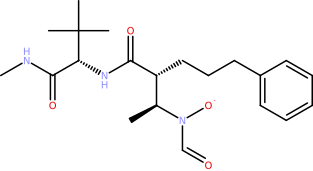
# read the 1st molecule
reader.read(0, mol_copy)
mol_copy
Warning
If the index is out of the valid range then a corresponding exception will be thrown!
# there is no 4th molecule
reader.read(3, mol_copy)
---------------------------------------------------------------------------
IndexError Traceback (most recent call last)
Cell In[85], line 2
1 # there is no 4th molecule
----> 2 reader.read(3, mol_copy)
IndexError: StreamDataReader: record index out of bounds
4.6. Essential Properties
The following tables list subsets of exported Chem.Entity3D, Chem.Atom, Chem.Bond and Chem.MolecularGraph properties which are essential for a proper description and follow-up processing of organic molecular structures. Along with each exported property key the CDPL.Chem package provides four functions that allow for a more comfortable and type-safe property value assignment and retrieval as well removal and existence testing (see section Dynamic Properties for further information).
Description |
Property Key |
Property Functions |
Value Type |
Default Value |
|---|---|---|---|---|
Bond order |
Chem.setOrder(), Chem.getOrder(), Chem.hasOrder(), Chem.clearOrder() |
int |
|
|
Stereo configuration descriptor |
Chem.setStereoDescriptor(), Chem.getStereoDescriptor(), Chem.hasStereoDescriptor(), Chem.clearStereoDescriptor() |
|
||
Ring system membership predicate |
Chem.setRingFlag(), Chem.getRingFlag(), Chem.hasRingFlag(), Chem.clearRingFlag() |
bool |
- |
|
Aromatic ring system membership predicate |
Chem.setAromaticityFlag(), Chem.getAromaticityFlag(), Chem.hasAromaticityFlag(), Chem.clearAromaticityFlag() |
bool |
- |
|
Stereo bond type in skeletal formulas |
Chem.set2DStereoFlag(), Chem.get2DStereoFlag(), Chem.has2DStereoFlag(), Chem.clear2DStereoFlag() |
int |
Description |
Property Key |
Property Functions |
Value Type |
Default Value |
|---|---|---|---|---|
Arbitrary structure name |
Chem.setName(), Chem.getName(), Chem.hasName(), Chem.clearName() |
str |
|
|
Smallest set of smallest rings (SSSR) |
Chem.setSSSR(), Chem.getSSSR(), Chem.hasSSSR(), Chem.clearSSSR() |
- |
||
Molecular graph components |
Chem.setComponents(), Chem.getComponents(), Chem.hasComponents(), Chem.clearComponents() |
- |
||
Aromatic atoms and bonds |
Chem.setAromaticSubstructure(), Chem.getAromaticSubstructure(), Chem.hasAromaticSubstructure(), Chem.clearAromaticSubstructure() |
- |
||
Ring atoms and bonds |
Chem.setCyclicSubstructure(), Chem.getCyclicSubstructure(), Chem.hasCyclicSubstructure(), Chem.clearCyclicSubstructure() |
- |
||
Arbitrary string data (e.g. from SD-file) |
Chem.setStructureData(), Chem.getStructureData(), Chem.hasStructureData(), Chem.clearStructureData() |
- |
4.7. Preparation for Downstream Processing
CDPL implementations of many methods and algorithms that operate on molecular structures (e.g. code for data output, descriptor calculations, conformer generation, substructure searching, …) rely on secondary structure-derived information such as implicit hydrogen counts, atomic orbital hybridization, the smallest set of smallest rings (SSSR), atom/bond ring membership, atom/bond aromaticity, and so forth. For the sake of computational efficiency, control and flexibility, it is generally the responsibility of the user to provide all input data needed by a particular method or algorithm. When it comes to the structure-derived data mentioned above, the CDPL.Chem package provides a set of easy to use functions that allow to compute these data and save the results as values of corresponding Chem.Atom, Chem.Bond or Chem.MolecularGraph properties for future use (see section Essential Properties). The following sub-sections provide an overview of the most relevant property calculation functions and demonstrate their correct usage by means of code snippets.
4.7.1. Implicit Hydrogen Count Calculation
In general, valences of atoms that are not consumed by explicit incident bonds (represented by Chem.Bond instances) are considered to be used up by imaginary single bonds to virtual hydrogen atoms (not explicitly represented by corresponding Chem.Atom instances). Within the CDPL such virtual hydrogens are denoted as Implicit Hydrogens. The implicit hydrogen count of an atom gets stored as value (of type unsigned integer) of the property Chem.AtomProperty.IMPLICIT_HYDROGEN_COUNT of the associated Chem.Atom instance and not only depends on the chemical element (specified by the value of the property Chem.AtomProperty.TYPE) but also on the values of the properties Chem.AtomProperty.FORMAL_CHARGE and Chem.AtomProperty.UNPAIRED_ELECTRON_COUNT, respectively. Moreover, the implicit hydrogen count of an atom depends on its structural context and the thus resulting number of incident explicit bonds as well as their order (specified by the value of the Chem.Bond property Chem.BondProperty.ORDER).
For the calculation of the implicit hydrogen count of a given atom represented by a Chem.Atom instance in a particular structural context specified by a Chem.MolecularGraph instance, the CDPL.Chem package provides the function Chem.calcImplicitHydrogenCount().
Example 1: Implicit hydrogen count of nitrogen in Methylamine
methylamine = Chem.BasicMolecule()
Chem.setType(methylamine.addAtom(), Chem.AtomType.N)
Chem.setType(methylamine.addAtom(), Chem.AtomType.C)
Chem.setOrder(methylamine.addBond(0, 1), 1)
Chem.calcImplicitHydrogenCount(methylamine.atoms[0], methylamine)
2
Example 2: Implicit hydrogen count of positively charged nitrogen in Methylamine
Chem.setFormalCharge(methylamine.atoms[0], 1) # N -> N+
Chem.calcImplicitHydrogenCount(methylamine.atoms[0], methylamine)
3
Example 3: Implicit hydrogen count of a positively charged nitrogen atom fragment
# create substructure referencing only the nitrogen of Methylamine
n_frag = Chem.Fragment()
n_frag.addAtom(methylamine.atoms[0])
# in n_frag the nitrogen does not have any expl. bonds!
Chem.calcImplicitHydrogenCount(methylamine.atoms[0], n_frag)
4
Example 4: Implicit hydrogen count of carbon in carbene
carbene = Chem.BasicMolecule()
Chem.setType(carbene.addAtom(), Chem.AtomType.C)
Chem.setUnpairedElectronCount(carbene.atoms[0], 2) # -> specify that the carbon has two unpaired electrons
Chem.calcImplicitHydrogenCount(carbene.atoms[0], carbene)
2
As demonstrated, the function Chem.calcImplicitHydrogenCount() just calculates the implicit hydrogen count for
a single atom and does not yet save the result as value of the property
Chem.AtomProperty.IMPLICIT_HYDROGEN_COUNT. To calculate the counts for all Chem.Atom instances
contained in a Chem.MolecularGraph instance and at the same time set the corresponding property
values the convenience function Chem.calcImplicitHydrogenCounts() is provided. The function expects the
Chem.MolecularGraph instance as first argument and a boolean value as second argument. The second argument
tells the function whether the implicit hydrogen shall be calculated even if all Chem.Atom instances already
have the value of the property Chem.AtomProperty.IMPLICIT_HYDROGEN_COUNT set. This so-called overwrite flag
needs to be True whenever the molecular graph has changed in a way (e.g. changed atom types, bond orders,
formal charges, …) so that previously calculated implicit hydrogen counts became invalid and thus
have to be updated. If the flag is False then the implicit hydrogen counts will only be calculated for
Chem.Atom instances that do not yet have the corresponding property value set.
An overwrite flag argument is also supported by many other property calculation functions and facilitates
computational efficiency by making sure calculations are carried out only once unless previous
results are not correct anymore and calculations therefore need to be redone.
def printImplHCounts(molgraph):
for atom in molgraph.atoms:
if Chem.hasImplicitHydrogenCount(atom):
value = Chem.getImplicitHydrogenCount(atom)
else:
value = 'n.a.'
print(f' Atom#{molgraph.getAtomIndex(atom)}: {value}')
print('Impl. H-count property values before calculation:')
printImplHCounts(methylamine)
print('Impl. H-count property values after calculation:')
Chem.calcImplicitHydrogenCounts(methylamine, False)
printImplHCounts(methylamine)
print('Impl. H-count property values after form. charge change and calculation with override=False:')
Chem.setFormalCharge(methylamine.atoms[0], 0) # N+ -> N
Chem.calcImplicitHydrogenCounts(methylamine, False)
printImplHCounts(methylamine)
print('Impl. H-count property values after form. charge change and calculation with override=True:')
Chem.calcImplicitHydrogenCounts(methylamine, True)
printImplHCounts(methylamine)
Impl. H-count property values before calculation:
Atom#0: n.a.
Atom#1: n.a.
Impl. H-count property values after calculation:
Atom#0: 3
Atom#1: 3
Impl. H-count property values after form. charge change and calculation with override=False:
Atom#0: 3
Atom#1: 3
Impl. H-count property values after form. charge change and calculation with override=True:
Atom#0: 2
Atom#1: 3
4.7.2. Atomic Orbital Hybridization Perception
The atomic orbital hybridization of a single atom represented by a Chem.Atom instance in a particular structural context specified by a Chem.MolecularGraph instance can be determined by the function Chem.perceiveHybridizationState(). The functions returns the identified hybrization state as an unsigned integer value. The meaning of this value is defined by the constants exported as static public attributes of class Chem.HybridizationState. The hybridization state of an atom depends on the chemical element (specified by the value of property Chem.AtomProperty.TYPE), the formal charge (specified by the value of property Chem.AtomProperty.FORMAL_CHARGE), the implicit hydrogen count (specified by the value of property Chem.AtomProperty.IMPLICIT_HYDROGEN_COUNT, see section Implicit Hydrogen Count Calculation) as well as the number and order (specified by the value of property Chem.BondProperty.ORDER) of any incident explicit bonds.
Example 1: Hybridization state of carbon in Methane
hyb_state_str = {
Chem.HybridizationState.UNKNOWN : 'n.a.',
Chem.HybridizationState.DP : 'dp',
Chem.HybridizationState.SD3 : 'sd3',
Chem.HybridizationState.SP : 'sp',
Chem.HybridizationState.SP2 : 'sp2',
Chem.HybridizationState.SP2D : 'sp2d',
Chem.HybridizationState.SP3 : 'sp3',
Chem.HybridizationState.SP3D : 'sp3d',
Chem.HybridizationState.SP3D2 : 'sp3d2',
Chem.HybridizationState.SP3D3 : 'sp3d3'
}
methane = Chem.BasicMolecule()
Chem.setType(methane.addAtom(), Chem.AtomType.C)
# calc. required property Chem.AtomProperty.IMPLICIT_HYDROGEN_COUNT
Chem.calcImplicitHydrogenCounts(methane, False)
hyb_state = Chem.perceiveHybridizationState(methane.atoms[0], methane)
print(f'Hybridization of carbon in Methane: {hyb_state_str[hyb_state]}')
Hybridization of carbon in Methane: sp3
For perceiving the hybridization state of all Chem.Atom instances contained in a Chem.MolecularGraph instance and saving the information for later use as value of the corresponding property Chem.AtomProperty.HYBRIDIZATION the convenience function Chem.perceiveHybridizationStates() is provided. The function expects the Chem.MolecularGraph instance as first argument and the value of the overwrite flag (see section Implicit Hydrogen Count Calculation for more information) as second argument.
Example 2: Hybridization of Alanine atoms
Chem.calcImplicitHydrogenCounts(mol, False)
Chem.perceiveHybridizationStates(mol, False)
for atom in mol.atoms:
hyb_state = Chem.getHybridizationState(atom)
print(f'Atom#{mol.getAtomIndex(atom)}: {hyb_state_str[hyb_state]}')
Atom#0: sp3
Atom#1: sp2
Atom#2: sp3
Atom#3: sp3
Atom#4: sp3
Atom#5: sp2
Atom#6: n.a.
Atom#7: n.a.
Atom#8: n.a.
Atom#9: n.a.
Atom#10: n.a.
Atom#11: n.a.
Atom#12: n.a.
4.7.3. Atom and Bond Ring Membership Perception
Information about the membership of an atom or bond in a cycle of the molecular graph gets stored as boolean value of the Chem.Atom property Chem.AtomProperty.RING_FLAG and the Chem.Bond property Chem.BondProperty.RING_FLAG, respectively. For the perception of atom/bond ring membership the CDPL.Chem package provides the function Chem.setRingFlags() which expects the Chem.MolecularGraph instance as first argument and the value of the overwrite flag (see section Implicit Hydrogen Count Calculation for more information) as second argument.
Example: Perception of cyclic atoms and bonds in Methylcyclohexane
mch = Chem.parseSMILES('C1C(C)CCCC1')
mch
Chem.setRingFlags(mch, False)
ring_atoms = []
ring_bonds = []
for atom in mch.atoms:
if Chem.getRingFlag(atom):
ring_atoms.append(mch.getAtomIndex(atom))
for bond in mch.bonds:
if Chem.getRingFlag(bond):
ring_bonds.append(mch.getBondIndex(bond))
print(f'Ring atoms: {ring_atoms}')
print(f'Ring bonds: {ring_bonds}')
Ring atoms: [0, 1, 3, 4, 5, 6]
Ring bonds: [0, 2, 3, 4, 5, 6]
The function Chem.setRingFlags() also sets the value of the Chem.MolecularGraph property Chem.MolecularGraphProperty.CYCLIC_SUBSTRUCTURE which is a Chem.Fragment instance that specifies the subset of Chem.Atom and Chem.Bond instances involved in a molecular graph cycle:
Chem.getCyclicSubstructure(mch)
4.7.4. SSSR Perception
The Smallest Set of Smallest Rings (SSSR) of a molecular graph is a so-called Minimal Cycle Basis whose knowledge is a prerequisite for a wide variety of cheminformatics algorithms (more information on this matter can be found here). Cycles of a molecular graph can be considered as simple substructures each comprising a distinct subset of the overall atoms and bonds. For this reason, the CDPL uses memory-efficient Chem.Fragment instances to specify the Chem.Atom and Chem.Bond instances that constitute a cycle and ring sets (like the SSSR) get represented by corresponding Chem.FragmentList instances. For the perception of the SSSR of a molecular graph the CDPL.Chem package provides the function Chem.perceiveSSSR(). The function expects the Chem.MolecularGraph instance as first argument and the value of the overwrite flag (see section Implicit Hydrogen Count Calculation for more information) as second argument. The perceived SSSR gets stored as value (of type Chem.FragmentList) of the property Chem.MolecularGraphProperty.SSSR for later use.
Example: Perception of the SSSR of Morphine
morphine = Chem.parseSMILES('CN1CC[C@]23C4=C5C=CC(O)=C4O[C@H]2[C@@H](O)C=C[C@H]3[C@H]1C5')
morphine
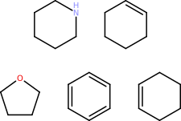
Chem.perceiveSSSR(morphine, False)
Chem.getSSSR(morphine)
4.7.5. Atom and Bond Aromaticity Perception
Information about the membership of an atom or bond in an aromatic ring system gets stored as boolean value of the Chem.Atom property Chem.AtomProperty.AROMATICITY_FLAG and the Chem.Bond property Chem.BondProperty.AROMATICITY_FLAG, respectively. For the perception of atom/bond aromaticity the CDPL.Chem package provides the function Chem.setAromaticityFlags() which expects the Chem.MolecularGraph instance as first argument and the value of the overwrite flag (see section Implicit Hydrogen Count Calculation for more information) as second argument. Whether a ring is aromatic or not depends on its size as well as the values of several Chem.Atom and Chem.Bond properties of the respective ring atoms and bonds. Furthermore, for the construction of fused ring systems, the SSSR of the parent molecular graph must be available.
Property dependencies:
Example: Perception of aromatic atoms and bonds of LSD
lsd = Chem.parseSMILES('CCN(CC)C(=O)[C@H]1CN([C@@H]2Cc3c[nH]c4c3c(ccc4)C2=C1)C')
lsd
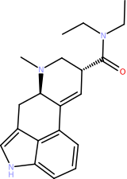
Chem.calcImplicitHydrogenCounts(lsd, False)
Chem.perceiveSSSR(lsd, False)
Chem.setAromaticityFlags(lsd, False)
arom_atoms = []
arom_bonds = []
for atom in lsd.atoms:
if Chem.getAromaticityFlag(atom):
arom_atoms.append(lsd.getAtomIndex(atom))
for bond in lsd.bonds:
if Chem.getAromaticityFlag(bond):
arom_bonds.append(lsd.getBondIndex(bond))
print(f'Aromatic atoms: {arom_atoms}')
print(f'Aromatic bonds: {arom_bonds}')
Aromatic atoms: [12, 13, 14, 15, 16, 17, 18, 19, 20]
Aromatic bonds: [12, 13, 14, 15, 16, 17, 18, 19, 20, 21]
The function Chem.setAromaticityFlags() also sets the value of the Chem.MolecularGraph property Chem.MolecularGraphProperty.AROMATIC_SUBSTRUCTURE which is a Chem.Fragment instance that specifies the subset of Chem.Atom and Chem.Bond instances found to be part of an aromatic ring system:
Chem.getAromaticSubstructure(lsd)
4.7.6. Molecular Graph Component Perception
A graph component is a maximal connected subgraph which consists of a subset of the vertices and edges where any two vertices are connected via at least one path but no vertex in the component connects to any vertex outside of it (more detailed information can be found here). In simpler words: components represent separated parts of a molecular graph (real-world examples are salts and mixtures). For the perception of molecular graph components the CDPL.Chem package provides the function Chem.perceiveComponents(). The function expects the Chem.MolecularGraph instance as first argument and the value of the overwrite flag (see section Implicit Hydrogen Count Calculation for information) as second argument. The perceived components gets stored as value (of type Chem.FragmentList) of the property Chem.MolecularGraphProperty.COMPONENTS for later use.
Example: Percpetion of the components of (S)-Norfluoxetine Oxalate
nfx_ox = Chem.parseSMILES('C1=CC=C(C=C1)[C@H](CC[NH3+])OC2=CC=C(C=C2)C(F)(F)F.C(=O)(C(=O)O)[O-]')
nfx_ox
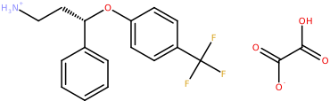
Chem.perceiveComponents(nfx_ox, False)
comps = Chem.getComponents(nfx_ox)
#comps.getSize()
# or
comps.size
2
#comps.getElement(0)
# or
comps[0]
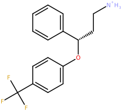
#comps.getElement(1)
# or
comps[1]
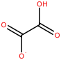
Warning
The attempt to access a Chem.FragmentList element by an index that is out of bounds will trigger an exception!
# there is no 3rd component
comps[2]
---------------------------------------------------------------------------
IndexError Traceback (most recent call last)
Cell In[105], line 2
1 # there is no 3rd component
----> 2 comps[2]
IndexError: ComponentSet: element index out of bounds
4.7.7. All-in-one Property Calculation
For computing all Chem.Atom, Chem.Bond and Chem.MolecularGraph properties that were discussed in the previous section via a single function call the CDPL.Chem package provides the convenience function Chem.calcBasicProperties(). The function expects the Chem.MolecularGraph instance as first argument and the value of the overwrite flag (see section Implicit Hydrogen Count Calculation for more information) as second argument. A call of the function is equivalent to the execution of the following lines of code:
Chem.perceiveComponents(molgraph, overwrite)
Chem.perceiveSSSR(molgraph, overwrite)
Chem.setRingFlags(molgraph, overwrite)
Chem.calcImplicitHydrogenCounts(molgraph, overwrite)
Chem.perceiveHybridizationStates(molgraph, overwrite)
Chem.setAromaticityFlags(molgraph, overwrite)
4.8. Output of Molecule Data
4.8.1. Direct String Output
SMILES
For a direct generation of SMILES strings the CDPL.Chem package provides the built-in utility function Chem.generateSMILES(). The function expects a Chem.MolecularGraph instance representing the chemical structure as first argument. Further optional arguments allow to customize the SMILES output in several aspects.
Example 1:
Chem.calcBasicProperties(mol, False) # calculate required properties (see above)
Chem.generateSMILES(mol) # by default, non-canonical SMILES strinsg are generated
'OC(=O)[C@@H](N)C'
Example 2:
Chem.generateSMILES(mol, True) # second arg. True -> generate canonical SMILES
'C[C@@H](C(O)=O)N'
Example 3:
Chem.generateSMILES(mol, True, False) # third arg. False -> output also standard H-atoms
'[H][C@@](C(=O)O[H])(C([H])([H])[H])N([H])[H]'
InChI
InChI strings can be generated by means of the utility function Chem.generateINCHI(). The function likewise
expects a Chem.MolecularGraph instance as its first argument. A second optional argument of type str
allows to provide settings for the InChI generation code (supported options are described
here).
The third argument controls the dimension of the atom coordinates (0 -> auto sel., 2 -> 2D or 3 -> 3D)
that are output as part of the generated auxiliary information (if enabled by the provided settings, see second example).
Example 1:
Chem.generateINCHI(mol)
'InChI=1S/C3H7NO2/c1-2(4)3(5)6/h2H,4H2,1H3,(H,5,6)/t2-/m0/s1'
Example 2:
Chem.generateINCHI(mol, '/WarnOnEmptyStructure /NEWPSOFF', 0) # outputs InChI as above + auxiliary information
'InChI=1S/C3H7NO2/c1-2(4)3(5)6/h2H,4H2,1H3,(H,5,6)/t2-/m0/s1 AuxInfo=1/1/N:5,4,6,3,1,2/E:(5,6)/it:im/rA:13OONCCCHHHHHHH/rB:;;n3;s4;s1d2s4;s4;s5;s5;s5;s3;s3;s1;/rC:5.135,-.25,0;4.269,1.25,0;2.5369,.25,0;3.403,-.25,0;3.403,-1.25,0;4.269,.25,0;3.403,.37,0;2.783,-1.25,0;3.403,-1.87,0;4.023,-1.25,0;2,-.06,0;2.5369,.87,0;5.672,.06,0;'
InChI Keys
Similarly, the InChI Key of a given Chem.MolecularGraph instance can be generated via the utility function Chem.generateINCHIKey():
Chem.generateINCHIKey(mol)
'QNAYBMKLOCPYGJ-REOHCLBHSA-N'
Other formats
The general procedure for the output of Chem.MolecularGraph instances as string data encoded in one of the supported formats (including SMILES and InChI) is as follows:
Create an instance of class Base.StringIOStream that wraps the string and serves as output data sink for the next steps.
Create a suitable Chem.MolecularGraphWriterBase subclass instance that will perform the format-specific encoding of the molecule data in step 3.
Call the write() method of the created data writer one or multiple times providing the Chem.MolecularGraph instance(s) to output as argument.
Call the close() method after all Chem.MolecularGraph instances have been output.
Molecular graph data writers for a specific format (Step 2) can be created in two ways:
Via class Chem.MolecularGraphWriter providing the Base.StringIOStream instance (Step 1) and a data format specifier (= one of the data format descriptors defined in class Chem.DataFormat) as constructor arguments.
Direct instantiation of a format-specific subclass of Chem.MolecularGraphWriterBase (e.g. Chem.MOL2MolecularGraphWriter implementing Sybyl MOL2 data output).
Example: Generating a string holding the MDL SDF record of a Chem.MolecularGraph instance
ios = Base.StringIOStream()
writer = Chem.MolecularGraphWriter(ios, 'sdf')
# or
#writer = Chem.MolecularGraphWriter(ios, Chem.DataFormat.SDF)
# or
#writer = Chem.SDFMolecularGraphWriterer(ios)
writer.write(mol)
writer.close()
sdf_str = ios.getvalue()
# or for retrieving the generated data as bytes object
#sdf_bytes = ios.getbytes()
print(sdf_str)
5950
12162506342D 0 0.00000 0.00000
13 12 0 1 0 999 V2000
5.1350 -0.2500 O 0 0 0 0 0 2 0 0 0
4.2690 1.2500 O 0 0 0 0 0 2 0 0 0
2.5369 0.2500 N 0 0 0 0 0 3 0 0 0
3.4030 -0.2500 C 0 0 1 0 0 4 0 0 0
3.4030 -1.2500 C 0 0 0 0 0 4 0 0 0
4.2690 0.2500 C 0 0 0 0 0 4 0 0 0
3.4030 0.3700 H 0 0 0 0 0 1 0 0 0
2.7830 -1.2500 H 0 0 0 0 0 1 0 0 0
3.4030 -1.8700 H 0 0 0 0 0 1 0 0 0
4.0230 -1.2500 H 0 0 0 0 0 1 0 0 0
2.0000 -0.0600 H 0 0 0 0 0 1 0 0 0
2.5369 0.8700 H 0 0 0 0 0 1 0 0 0
5.6720 0.0600 H 0 0 0 0 0 1 0 0 0
1 6 1 0 0 0
1 13 1 0 0 0
2 6 2 0 0 0
4 3 1 6 0 0
3 11 1 0 0 0
3 12 1 0 0 0
4 5 1 0 0 0
4 6 1 0 0 0
4 7 1 0 0 0
5 8 1 0 0 0
5 9 1 0 0 0
5 10 1 0 0 0
M END
> <PUBCHEM_COMPOUND_CID>
5950
$$$$
4.8.2. File Output
Writing Chem.MolecularGraph data to file storage also requires the creation of a Chem.MolecularGraphWriterBase subclass instance that performs the actual format-specific data encoding work. As with string data output, several options exist:
Instantiation of class Chem.MolecularGraphWriter passing the path to the file as constructor argument. When just a path is provided as argument then the data format will be determined automatically from the file extension. To override this behavior, a second argument specifying the actual file extension string to use (e.g.
'sdf','smi','mol2', ..) or one one of the data format descriptors defined in class Chem.DataFormat has to be provided.Instantiation of class Chem.MolecularGraphWriter passing an instance of class Base.FileIOStream that was created for the file as the first and a format specifier as second argument. The format specification can be a characteristic file extension or one of the data format descriptors defined in class Chem.DataFormat.
Direct instantiation of a format-specific subclass of Chem.MolecularGraphWriterBase (e.g. Chem.SDFMolecularGraphWriter implementing the output of MDL SD-file data) that accepts an instance of class Base.FileIOStream as constructor argument.
Direct instantiation of a format-specific subclass of Chem.MolecularGraphWriterBase (e.g. Chem.FileSDFMolecularGraphWriter) that accepts a file path as constructor argument.
# - Option 1 -
writer = Chem.MolecularGraphWriter('/path/to/output/file.sdf')
# or
writer = Chem.MolecularGraphWriter('/path/to/output/file', 'smi')
# or
writer = Chem.MolecularGraphWriter('/path/to/output/file', Chem.DataFormat.SMILES)
# - Option 2 -
writer = Chem.MolecularGraphWriter(Base.FileIOStream('/path/to/output/file', 'w'), 'sdf')
# or
writer = Chem.MolecularGraphWriter(Base.FileIOStream('/path/to/output/file', 'w'), Chem.DataFormat.SDF)
# - Option 3 -
writer = Chem.MOL2MolecularGraphWriter(Base.FileIOStream('/path/to/output/file', 'w'))
# - Option 4 -
writer = Chem.FileSDFMolecularGraphWriter('/path/to/output/file')
Once a data writer instance has been created, the write() method can be called one or multiple times with the Chem.MolecularGraph instance(s) to output as argument. After all Chem.MolecularGraph instances have been output the close() method needs to be called to flush all written data to disk and close the file (note: although this method will be called automatically by the destructor of the writer instance, an explicit call will have an immediate effect and is preferred over a delayed destructor call by the garbage collector happening at an indeterminate point in time).
Example: SMILES output of two Chem.Molecule instances
Chem.calcBasicProperties(mol_copy, False) # calc. required properties
writer = Chem.MolecularGraphWriter('output.smi')
writer.write(mol)
writer.write(mol_copy)
writer.close()
with open('output.smi', 'r') as smi_file:
print(smi_file.read())
OC(=O)[C@@H](N)C 5950
c1n(ccn1)c1ccc(cc1)c1ccc(n1c1c(cc(cc1)C(=O)N)C)CCC(=O)[O-] 022_3QJ5_A